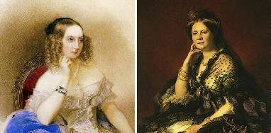

Борис Акунин
Мой календарь
Сегодня день рождения великой княгини Елены Павловны (1807–1873), которую, по моему глубокому убеждению, следует считать самым привлекательным человеком во всей тысячелетней российской истории - а там серьезная конкуренция.
С этим утверждением, которое сегодня звучит странновато, до революции согласились бы очень многие, но в ХХ веке Елену Павловну выкинули из советских учебников как представительницу царской фамилии и потом обратно не вернули - забыли.
А забывать ее ни в коем случае нельзя.
Сначала это была просто старательная девочка, одна из бесчисленных немецких принцесс, попавших в Россию в ходе традиционного августейшего «импорта невест» - как в свое время Екатерина Великая.
Бывшая Фредерика-Шарлотта-Мария Вюртембергская добросовестно полюбила новую родину, ее религию, культуру, язык. Честно пыталась полюбить и мужа, великого князя Михаила Павловича, исправно рожала ему дочерей и очень хорошо их воспитывала. Но муж был дуболом и солдафон, а дочери рано умирали. Всю свою душевную энергию Елена Павловна тратила на Россию - «спешила делать добро».
Просто невероятно, сколько она успела сделать, скольким ей обязана страна.
Великая княгиня была главным лоббистом освобождения крестьян и последующих Великих Реформ. Создала русский Красный Крест. Строила больницы. Основала Консерваторию, пожертвовав на это свои драгоценности. Организовала национальную систему благотворительности. Заложила основы женского образования. Из личных средств поддерживала талантливых художников и музыкантов. Впервые издала полное собрание сочинений Гоголя. И прочая, и прочая.
Когда Елена Павловна умерла, Тургенев написал, что вряд ли кто-нибудь сможет ее заменить. Это ощущение оставляет после себя всякий, кто чего-то стоит, и чем потеря ощутимей, тем, значит, лучше был человек.